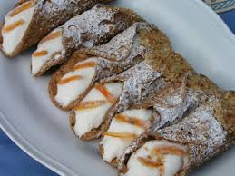

Los cannoli sicilianos son unas cañas elaboradas con una masa frita aromatizada con vino Marsala, rellena de una crema de queso ricotta.

Lista de ingredientes
Para la masa
400 g harina 0000
8 g cacao amargo
45 g azúcar
1 cdta de canela
1 cdta sal
80 g de manteca
100 g de huevo ( 2 unidades aproximadamente)
30 ml de vinagre
45 ml de vino Marsala
Cilindros de metal para cannolis
Para el relleno
750 g de ricota
300 g de azúcar impalpable
Ralladura de 1 naranja
Chips de chocolate
Preparación
La masa: Comenzar tamizando en un bowl los ingredientes secos, harina, cacao, azúcar, canela y sal. Incorporar la manteca y el huevo.
Integrar y luego agregar el vinagre y el vino. Amasar durante unos 5 minutos, hasta obtener un bollo de masa liso y bastante compacto, debe ser una masa algo dura, similar a la masa de pasta.
Envolver la masa en film y dejar descansar en la heladera durante 2 horas mínimo.
Estirar la masa con la ayuda de un palote hasta lograr 2 mm de espesor, debe ser una masa fina, esto es lo que va a permitir que al momento de freírla sea liviana y crocante.
Cortar la masa con un cortante redondo de 12 cm, y enrollarla alrededor de un cilindro metálico. Sellar el cierre con un poco de huevo batido, realizar un poco de presión para evitar que se abra al momento de freír la masa.
Calentar el aceite a 180°. Freír los cannoli hasta que tomen color dorado. Retirar con cuidado y colocarlas en papel absorbente. Dejar que enfríen y retirar el cilindro de metal.
Para el relleno: Mezclar la ricota escurrida con el azúcar impalpable, la ralladura de naranja y los chips de chocolate. Colocar el relleno dentro de una manga y rellenar los cannoli. Si se desea, colocar pistachos picados en los extremos.